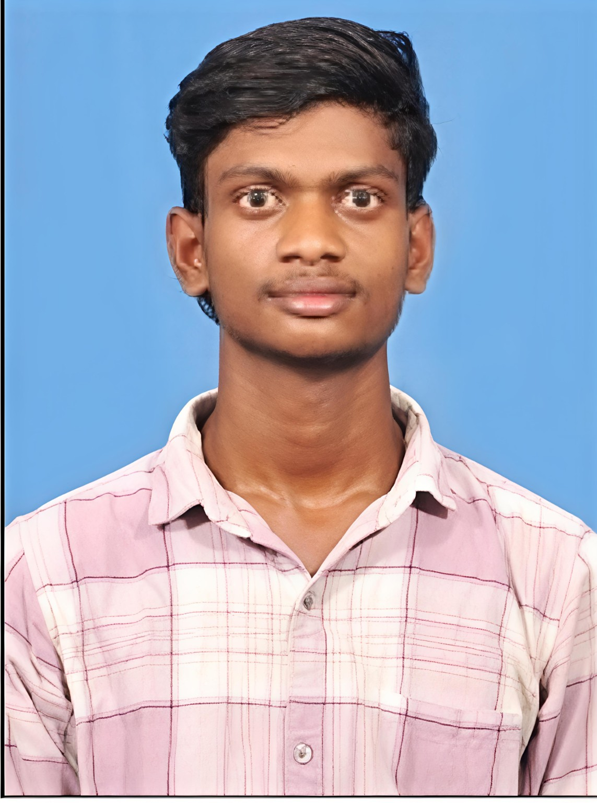
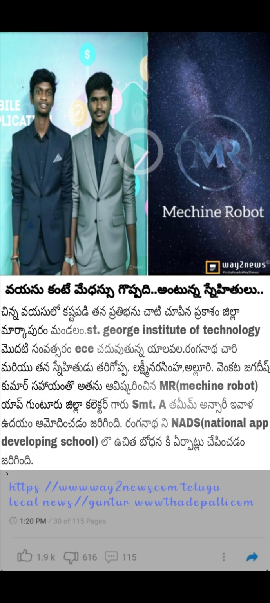

Andhra Pradesh, India
Explore My Journey View App ProjectYalavala Ranganadh Chari is a technology and creative enthusiast from Andhra Pradesh with interests in Ethical Hacking, Cybersecurity, App Design, Photography, Online Coaching, Digital Technology and Creative Design.
Despite facing significant personal challenges from an early stage of life, Yalavala Ranganadh Chari has continued to pursue education, technology, creativity and personal growth with determination. His journey reflects perseverance, a passion for learning and a commitment to building a better future through knowledge, innovation and hard work.
He is currently pursuing a dual degree, studying Degree at Sri Sadhana Degree College along with B.Tech at SGIT. He also has a strong passion for chess and achieved the distinction of becoming a State-Level Chess Champion in 2016.
His interests combine technology, creativity, education and problem-solving, with a goal of continuously learning new skills and sharing knowledge with others.
Achieved State-Level Chess Champion recognition in 2016.
Achieved a Top 3 position in an SBI Data Executive Office examination.

One of Yalavala Ranganadh Chari's highlighted technology projects is MR (Machine Robot), a project connected with his app-development and technology interests.
The project has been presented as part of his technology journey and reflects his interest in combining software, applications and innovative ideas.
A Telugu news clipping about the project is included on this website as a project reference image.
MR (Machine Robot) project video.
Ethical Hacking and cybersecurity learning.
Application concepts, UI ideas and digital product development.
Photography, photo editing and visual creativity.
Educational content, online learning and student-focused resources.
Connect
Instagram
@explore_with_chari
YouTube
MRBK LEARNERS
Facebook
YALAVALA RANGANADH CHARI